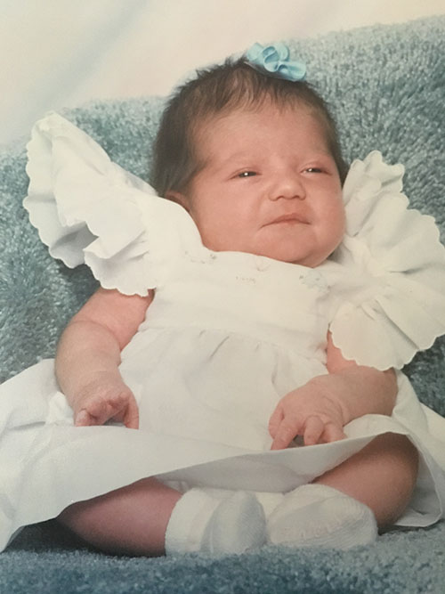
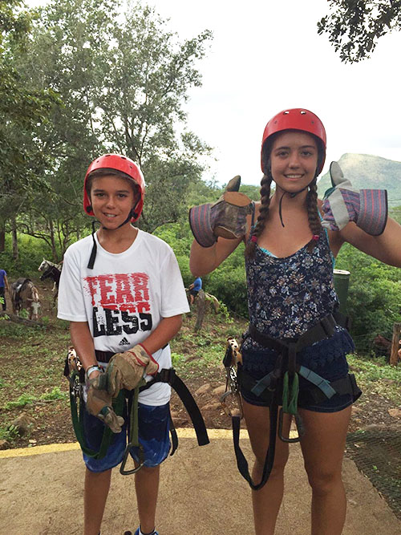
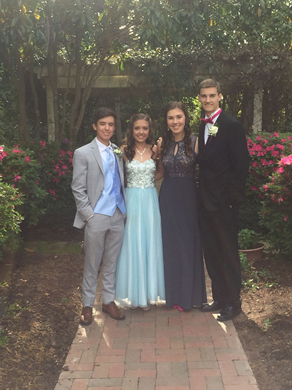
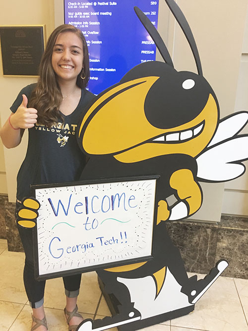
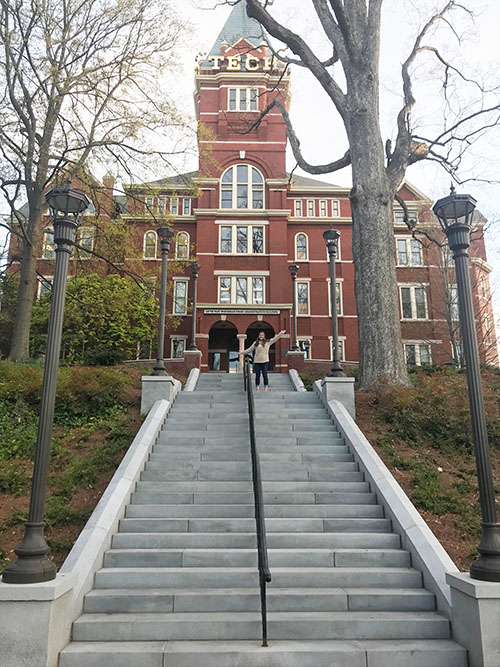

Early Years

Anna Catalina Lindstrom was born June 3, 2000 in Pensacola, Florida. After she was born, her family moved to Greenville, South Carolina where they have remained. Though Anna is her first name, she has always gone my Catalina. Her first word was pelota, which is Spanish for ball. She went to St. Mary’s Catholic School for elementary school before moving to Five Oaks Academy to complete her elementary education.
In middle school, Catalina attended St. Joseph’s Catholic School, where she soon became known for her fun personality and intelligence. She participated in both Cross Country and Track and Field, both of which she has continued throughout her high school career. It was during this time that she met her best friend, Megan Seidel. The two remain best friends to this day.
Family Life

Catalina is the oldest of two children in her family. She has a brother, Andres, who is four years younger than her. Catalina’s mother, Elsa, was born in Colombia, South America. She met Catalina’s father, Brad, when she was an exchange student at his high school in Minnesota. The two fell in love and were married few years later, at which point she moved to the United States. Elsa studied Chemical Engineering at a college in Colombia. Brad is a podiatrist; he owns his own practice in town where Elsa works with him.
Catalina has a lot of extended family on her mom’s side in Colombia, so they usually visit the country once a year. Thankfully, Catalina, Andres, Elsa, and Brad are all fluent in both English and Spanish, so communication with the family is easier. Catalina’s paternal grandparents live in Greenville.
High School

Catalina also attended St. Joseph’s Catholic School during High School. She took lots of rigorous courses in order to challenge herself. Beginning with AP European History her sophomore year, Catalina has taken multiple AP courses in hopes that she can get college credit for some of them. Whether or not she gets credit, she still gained lots of experience from her time in these classes and in others. As a result, she totally rocked the SAT and the ACT, so much so that she was accepted into the Georgia Institute of Technology, one of the most prestegious engineering schools in the country.
Throughout High School Catalina also was a member of the Art Honor Society, where she has cultivated her creativity. Lots of the projects she has made in her time in the society, spare time, and as a part of her senior project are featured on the artwork page of this website.
Future Plans
In the fall, Catalina will be attending Georgia Tech as an engineer; she plans to be a Mechanical Engineer with a double minor in German and Graphic Design. She is not entirely sure what she wants to do with her life, but those closest to her are confident that she will find joy and success in whatever she decides to pursue.
